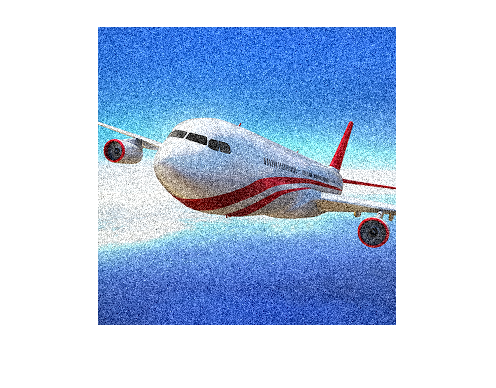

This code displays perceptual redundancy in YCbCr channel
Contents
read the image and convert rgb to YCbCr
image = imread('imgq7.png');
yim = rgb2ycbcr(image);
y = yim(:,:,1);
cb = yim(:,:,2);
cr = yim(:,:,3);
add noise to image
y1 = imnoise(y,'gaussian');
concatenate the three different channels
im1 = cat(3,y1,cb,cr);
convert YCbCr to rgb
im1 = ycbcr2rgb(im1);
show image with noise in Y
disp('Noise in Y:');
figure , imshow(im1);
Noise in Y:

repeat the process for noise in Cb
cb1 = imnoise(cb,'gaussian');
im2 = cat(3,y,cb1,cr);
im2 = ycbcr2rgb(im2);
disp('Noise in Cb : ');
figure , imshow(im2);
Noise in Cb :
repeat the process for noise in Cr
cr1 = imnoise(cr,'gaussian');
im3 = cat(3,y,cb,cr1);
im3 = ycbcr2rgb(im3);
figure , imshow(im3);
disp('We observe that if we insert noise in Cb or Cr channels then there is not much difference in the created image');
disp('But if we insert noise in Y channel then the image is disturbed');
disp('Hence there is perceptual redundancy in the Cb and Cr channels');
disp('Noise in Cr : ');
We observe that if we insert noise in Cb or Cr channels then there is not much difference in the created image
But if we insert noise in Y channel then the image is disturbed
Hence there is perceptual redundancy in the Cb and Cr channels
Noise in Cr :